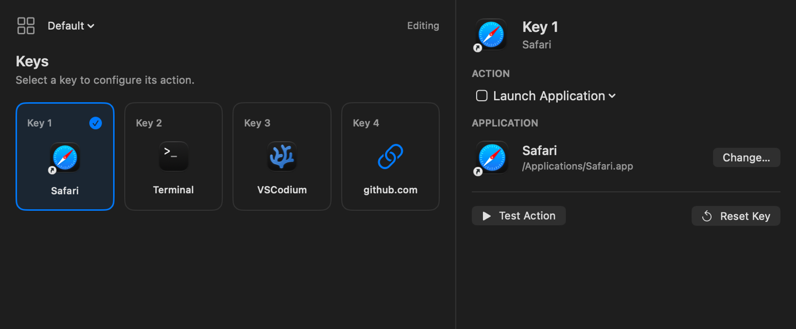

Macro Pad
Swift · C++A four-button Bluetooth controller and its macOS app. Each button can run a shortcut, open an app, or perform a different action depending on which application you’re using.

I write software and build things with electronics.
I’m based in the UAE. Recently, I’ve been working on a macOS app for a Bluetooth macro pad, a watch-party server, and a few ESP32 projects.
A four-button Bluetooth controller and its macOS app. Each button can run a shortcut, open an app, or perform a different action depending on which application you’re using.

A server for watching videos together. It keeps playback in sync, supports linked rooms and chat, and lets the host see who’s buffering or falling behind.
Connects a Bluetooth RGB light to Apple Home through an ESP32, with a small OLED and button controls. I’ve also implemented signed firmware updates and rollback; hardware testing for the updater is still pending.
An Apple Music display for the M5Stack Cardputer. It gets track information and album art from a Mac over Bluetooth, with playback controls on the device’s keyboard.
I’m from Kerala and live in the UAE. I started programming at 12, initially with web development. Since then I’ve been working with Go, Swift, and C++ alongside JavaScript.
I also play chess and listen to music.
You can reach me at me@amansanoj.com.